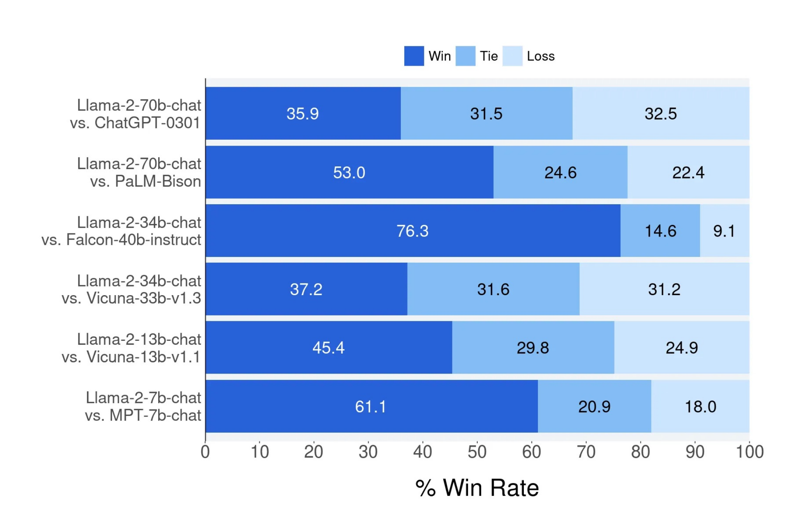

<!DOCTYPE html>
<html lang="zh-CN">
<head>
<meta charset="UTF-8">
<meta name="viewport" content="width=device-width, initial-scale=1.0">
<title>第 47 章 · 开源复现案例研究 | 大模型后训练实战 Cookbook</title>
<link rel="stylesheet" href="../assets/css/style.css">
<script src="../assets/js/manifest.js"></script>
<script>window.MathJax = { tex: { inlineMath: [['\(', '\)']], displayMath: [['\[', '\]']] }, options: { skipHtmlTags: ['script', 'noscript', 'style', 'textarea', 'pre', 'code'] } };</script>
<script src="https://cdn.jsdelivr.net/npm/mathjax@3/es5/tex-mml-chtml.js" async></script>
<script src="../assets/js/nav.js" defer></script>
</head>
<body>
<div class="layout">
  <aside class="sidebar" id="sidebar"></aside>
  <main class="content">

    <header class="chapter-header">
      <div class="chapter-crumb">第 8 部分 · 训练工程</div>
      <h1>第 47 章 · 开源复现案例研究</h1>
      <p class="chapter-lead">纸上得来终觉浅，绝知此事要躬行。理论公式与算子优化最终必须汇聚为一套严密、可复现、且经受住工业级检验的后训练全流程工程配方（Recipes）。本章深度拆解大模型开源界最具标杆意义的三大后训练工程典范：Meta 官方 Llama 2 与 Llama 3 的多轮迭代对齐管线（包含拒绝采样 Rejection Sampling、双轨偏好建模、合成数据主导与 DPO 混合演进）；华盛顿大学与 AI2 团队打造的“完全开源透明”后训练灯塔 Tulu 3（从数据混合配比、环境可验证强化学习 RLVR 到全量评测复现）；以及 Hugging Face 团队的轻量级偏好对齐里程碑 Zephyr-7B（基于 dDPO 蒸馏偏好优化的极简实战）。本章提供三大开源方案在数据量、算力开销与评测基准上的全景对比大表，给出自绘后训练拓扑对比图，并附赠完整可运行的 Tulu 3 风格 SFT 与 DPO 自动化复现训练脚本。</p>
      <div class="chapter-meta">⏱ 预计学习 120 分钟 ｜ 难度 ★★★★☆ ｜ 先修：第 12 章、第 22 章、第 43 章</div>
    </header>

    <nav class="toc-box" id="auto-toc"></nav>

    <h2>1. 开源后训练的三座灯塔：从黑盒宣称到白盒配方</h2>
    <p>在大语言模型技术爆发的早期阶段，工业界巨头往往在公开发布的技术报告中对后训练的实现细节语焉不详：只给出极其宏观的概念流程图，却对最为关键的数据混合配比、合成数据清洗流水线、超参数演进调度、负样本构造逻辑以及模型打分阈值守口如瓶。这种“只开源模型权重、不开源完整训练管线”的伪开源模式，让广大学术界研究者与中小型团队的复现工作陷入了无尽的玄学试错与算力泥潭。</p>
    <p>幸运的是，随着全球开源社区技术透明化运动的推进，以 <strong>Meta Llama 系列</strong>、<strong>AI2 Tulu 3</strong> 和 <strong>Hugging Face Zephyr</strong> 为代表的卓越开源项目逐步驱散了后训练的迷雾，在不同硬件预算与工程目标下，形成了极具指导意义的三大主流范式：</p>
    <ul>
      <li><strong>工业界航母级工业流水线：Meta Llama 2 / Llama 3</strong>。以海量算力与工程资源为后盾，确立了“超大规模高质量 SFT &rarr; 多轮在线拒绝采样（Rejection Sampling） &rarr; 多轮 PPO / DPO 连续对齐 &rarr; 双轨奖励模型平衡”的工业级最高对齐标准，展示了后训练对基座模型潜能的极限压榨。</li>
      <li><strong>全栈透明可复现学术标杆：AI2 Tulu 3</strong>。由华盛顿大学与 Allen Institute for AI（AI2）联合打造，是业内首个将<strong>训练源码、原始清洗数据、微调权重、强化学习环境、以及自动化评估套件 100% 完全开源透明</strong>的划时代项目，彻底打破了后训练配方的“秘密花园”。</li>
      <li><strong>轻量级高性价比创新典范：Hugging Face Zephyr-7B</strong>。开创了免奖励模型（Critic-free / RM-free）的直接偏好蒸馏（dDPO）范式，证明了仅需数千张精选合成偏好对与消费级算力，就能让 7B 小模型在聊天基准上实现对早期 70B 庞大模型的越级超越。</li>
    </ul>

    <!-- 自绘 SVG：Llama 3 与 Tulu 3 后训练全流程拓扑对比图 -->
    <figure class="figure">
      <svg class="diagram" viewBox="0 0 720 390" xmlns="http://www.w3.org/2000/svg" role="img" aria-label="Llama 3 与 Tulu 3 后训练拓扑对比图">
        <defs>
          <marker id="topo-arrow" markerWidth="8" markerHeight="8" refX="6" refY="3" orient="auto">
            <path d="M0,0 L6,3 L0,6 Z" fill="#2563eb"/>
          </marker>
        </defs>
        <text x="360" y="24" text-anchor="middle" font-size="16" font-weight="bold" fill="#1e293b">工业界（Llama 3）与全开源（Tulu 3）后训练技术拓扑深度对比</text>

        <!-- 左侧：Llama 3 管线 -->
        <rect x="25" y="50" width="325" height="325" rx="8" fill="#f8fafc" stroke="#cbd5e1" stroke-width="1.5"/>
        <text x="187" y="75" text-anchor="middle" font-size="15" font-weight="bold" fill="#1e40af">Meta Llama 3 官方工业后训练流</text>
        
        <!-- Llama 步骤 1 -->
        <rect x="45" y="95" width="285" height="42" rx="6" fill="#eff6ff" stroke="#2563eb" stroke-width="1.2"/>
        <text x="55" y="115" font-size="13" font-weight="bold" fill="#1e40af">1. 多阶段领域 SFT</text>
        <text x="55" y="130" font-size="11" fill="#475569">代码、数学、长文本专用合成数据 + 人工金标</text>

        <path d="M187 137 L 187 155" stroke="#2563eb" stroke-width="1.5" marker-end="url(#topo-arrow)"/>

        <!-- Llama 步骤 2 -->
        <rect x="45" y="157" width="285" height="48" rx="6" fill="#ecfdf5" stroke="#10b981" stroke-width="1.2"/>
        <text x="55" y="177" font-size="13" font-weight="bold" fill="#065f46">2. 拒绝采样 (Rejection Sampling, RS)</text>
        <text x="55" y="193" font-size="11" fill="#475569">每 Prompt 采样 K 个候选，多奖励模型联合打分胜者</text>

        <path d="M187 205 L 187 223" stroke="#2563eb" stroke-width="1.5" marker-end="url(#topo-arrow)"/>

        <!-- Llama 步骤 3 -->
        <rect x="45" y="225" width="285" height="48" rx="6" fill="#fffbeb" stroke="#f59e0b" stroke-width="1.2"/>
        <text x="55" y="245" font-size="13" font-weight="bold" fill="#92400e">3. 多轮迭代对齐 (Iterative DPO / PPO)</text>
        <text x="55" y="261" font-size="11" fill="#475569">利用前代模型产出在线负样本，执行多轮连续飞轮对齐</text>

        <path d="M187 273 L 187 291" stroke="#2563eb" stroke-width="1.5" marker-end="url(#topo-arrow)"/>

        <!-- Llama 步骤 4 -->
        <rect x="45" y="293" width="285" height="42" rx="6" fill="#fef2f2" stroke="#ef4444" stroke-width="1.2"/>
        <text x="55" y="313" font-size="13" font-weight="bold" fill="#991b1b">4. 安全与有用双轨合并</text>
        <text x="55" y="328" font-size="11" fill="#475569">独立训练双奖励模型，强化学习中动态平衡对齐</text>

        <text x="187" y="358" text-anchor="middle" font-size="11" fill="#64748b">特点：算力充裕、多阶段循环迭代、重度依赖私有奖励模型</text>

        <!-- 右侧：Tulu 3 管线 -->
        <rect x="370" y="50" width="325" height="325" rx="8" fill="#f8fafc" stroke="#cbd5e1" stroke-width="1.5"/>
        <text x="532" y="75" text-anchor="middle" font-size="15" font-weight="bold" fill="#047857">AI2 Tulu 3 全开源后训练配方</text>

        <!-- Tulu 步骤 1 -->
        <rect x="390" y="95" width="285" height="42" rx="6" fill="#eff6ff" stroke="#2563eb" stroke-width="1.2"/>
        <text x="400" y="115" font-size="13" font-weight="bold" fill="#1e40af">1. 完全透明 SFT 混合 (Tulu-3-SFT-Mix)</text>
        <text x="400" y="130" font-size="11" fill="#475569">941k 条全公开数据（数学、推理、指令、合成）</text>

        <path d="M532 137 L 532 155" stroke="#2563eb" stroke-width="1.5" marker-end="url(#topo-arrow)"/>

        <!-- Tulu 步骤 2 -->
        <rect x="390" y="157" width="285" height="48" rx="6" fill="#ecfdf5" stroke="#10b981" stroke-width="1.2"/>
        <text x="400" y="177" font-size="13" font-weight="bold" fill="#065f46">2. 免模型验证强化学习 (RLVR)</text>
        <text x="400" y="193" font-size="11" fill="#475569">基于环境确定性 Ground Truth（代码执行 + 数学正则）</text>

        <path d="M532 205 L 532 223" stroke="#2563eb" stroke-width="1.5" marker-end="url(#topo-arrow)"/>

        <!-- Tulu 步骤 3 -->
        <rect x="390" y="225" width="285" height="48" rx="6" fill="#fffbeb" stroke="#f59e0b" stroke-width="1.2"/>
        <text x="400" y="245" font-size="13" font-weight="bold" fill="#92400e">3. 直接偏好优化 (DPO)</text>
        <text x="400" y="261" font-size="11" fill="#475569">超参数精细网格搜索：beta=0.05, lr=5e-7, cosine 衰减</text>

        <path d="M532 273 L 532 291" stroke="#2563eb" stroke-width="1.5" marker-end="url(#topo-arrow)"/>

        <!-- Tulu 步骤 4 -->
        <rect x="390" y="293" width="285" height="42" rx="6" fill="#f5f3ff" stroke="#8b5cf6" stroke-width="1.2"/>
        <text x="400" y="313" font-size="13" font-weight="bold" fill="#6d28d9">4. 自动化回归评测流水线</text>
        <text x="400" y="328" font-size="11" fill="#475569">涵盖 AlpacaEval 2、GSM8k、MATH、HumanEval</text>

        <text x="532" y="358" text-anchor="middle" font-size="11" fill="#64748b">特点：100% 数据与超参透明、确定性规则奖励、高可复现性</text>
      </svg>
      <figcaption>图 47-1：工业界（Llama 3）与全开源学术界（Tulu 3）后训练工程拓扑全景对比</figcaption>
    </figure>

    <p><strong>本节小结：</strong>开源后训练已经从早期的单步 SFT 演进为高度精细的多阶段闭环系统，学习业界标杆配方是掌握后训练工程的最高效捷径。</p>

    <h2>2. Llama 2 与 Llama 3 官方后训练管线深度剖析</h2>
    <p>Meta 的 Llama 系列不仅是开源底座的统治者，其技术报告更是工业级后训练工程的百科全书。深入研读 Llama 2 与 Llama 3 的后训练细节，可以提炼出顶级工业实验室在算力充沛环境下的核心对齐哲学。</p>

    <h3>2.1 Llama 2：双轨偏好建模与拒绝采样迭代</h3>
    <p>在 Llama 2 中，Meta 首次系统性论证了<strong>“多轮强化学习连续飞轮”</strong>的压倒性优势。其整个管线不是单次跑通即止，而是连续演进了 5 个版本（从 RLHF-v1 到 RLHF-v5）：</p>
    <ul>
      <li><strong>拒绝采样（Rejection Sampling, RS）</strong>：针对每一个 Prompt，由当前最新的策略模型独立采样生成 \( K \) 条候选回答（例如 \( K=16 \)）。随后，使用预先训练好的高精度奖励模型（Reward Model）对这 16 条回复进行严格打分，<strong>仅挑选得分最高的 1 条优质样本作为伪金标（Pseudo Ground-Truth）</strong>，加入下一轮的微调数据集中重新做 SFT 训练。RS 机制实质上是在广阔的策略输出空间中执行了一次高强度的最佳搜索（Best-of-N Search），极大地提升了模型的表达上限。</li>
      <li><strong>双轨偏好对齐（Helpfulness vs Safety RM）</strong>：Meta 在实验中发现，强行将“有用性（Helpfulness）”与“无害安全性（Safety）”揉进同一个标量奖励模型中，会导致严重的目标冲突：模型往往为了避免任何潜在风险而产生过度拒答（Over-refusal，例如拒绝回答“如何杀死一个 Linux 进程”）。因此，Llama 2 <strong>独立训练了两个专门的奖励模型：一个有用性 RM，一个安全性 RM</strong>。在随后的 PPO 与拒绝采样中，根据 Prompt 的敏感性动态加权组合两个 RM 的打分，完美实现了双轨解耦。</li>
    </ul>

    <!-- 引用位图：Llama 2 胜率图 -->
    <figure class="figure">
      
      <figcaption>图 47-2：Llama 2-Chat 在多轮人类与模型评估中相对竞品的胜率曲线（来源：Touvron et al., 2023, arXiv:2307.09288）</figcaption>
    </figure>

    <h3>2.2 Llama 3：DPO 融合与合成数据主导</h3>
    <p>到了 Llama 3，Meta 的后训练管线进一步升华。最显著的质变在于：<strong>人类手写标注数据逐渐退居二线，大规模、多层级的合成数据与自动化检验系统成为了绝对主角</strong>：</p>
    <ol>
      <li><strong>精选高质量 SFT</strong>：Meta 指出，SFT 数据的质量远重于数量。Llama 3 仅使用了精心清洗和合成的高价值数据，覆盖编程、数学、长文档摘要和多轮指令遵循，严格过滤任何低信息密度的模板文本。</li>
      <li><strong>RS + DPO 深度结合</strong>：在偏好对齐阶段，Llama 3 结合了在线拒绝采样与直接偏好优化（Direct Preference Optimization, DPO）。在每个迭代周期中，使用最新模型生成多个候选，不仅选出最好的（作为 \( y_w \)），还选出具有代表性的错误回复（作为 \( y_l \)），构造高信息量的<strong>在线负样本对（On-policy Preference Pairs）</strong>，直接喂给 DPO 进行策略更新。</li>
      <li><strong>PPO 与 DPO 的组合拳</strong>：Meta 明确澄清，DPO 并非在所有维度上完全超越 PPO。DPO 在通用对话与指令遵循上效率极高，但在需要严格长逻辑链条的数学推理与代码任务中，具备动态环境探索能力的 PPO 仍然表现出更强的鲁棒性。</li>
    </ol>

    <h2>3. Tulu 3：端到端完全开源后训练配方</h2>
    <p>如果说 Llama 的配方由于缺乏原始数据而仍显朦胧，那么 AI2 的 <span class="term">Tulu 3</span> 则是现代后训练工程的“全知之书”。Tulu 3 毫无保留地向全世界公开了微调 Llama 3 达到 GPT-4 级性能所需的全部细节。</p>

    <!-- 引用位图：Tulu 3 管线图 -->
    <figure class="figure">
      
      <figcaption>图 47-3：Tulu 3 端到端开源后训练管线全景图（来源：Lambert et al., 2024, arXiv:2411.15124）</figcaption>
    </figure>

    <h3>3.1 Tulu 3 SFT 数据混合配比（Tulu-3-SFT-Mix）</h3>
    <p>Tulu 3 构建了由 <strong>941,000 条高质量样本</strong> 组成的终极 SFT 配比池。其核心构成经过数十次消融实验验证，成为了业内公认的黄金比例：</p>

    <div class="tbl-wrap">
      <table>
        <thead>
          <tr>
            <th>数据子集模块</th>
            <th>样本数量 (Tokens)</th>
            <th>数据源与构建逻辑</th>
            <th>核心赋能能力</th>
          </tr>
        </thead>
        <tbody>
          <tr>
            <td><strong>通用指令遵循 (General IF)</strong></td>
            <td>约 250k</td>
            <td>No-Robots (人类金标) + UltraFeedback 筛选指令</td>
            <td>多轮对话基础礼貌、格式排版、格式遵循</td>
          </tr>
          <tr>
            <td><strong>复杂推理与数学 (Math &amp; Reasoning)</strong></td>
            <td>约 200k</td>
            <td>NuminaMath + GSM8k 合成变体 + CoT 推理链</td>
            <td>逐步分步解题、符号运算、公式推导</td>
          </tr>
          <tr>
            <td><strong>编程与代码工程 (Code)</strong></td>
            <td>约 180k</td>
            <td>Code-Feedback + Evol-CodeAlpaca</td>
            <td>Python/C++ 语法生成、Bug 修复、单元测试</td>
          </tr>
          <tr>
            <td><strong>严格硬约束遵循 (IFEval Hard)</strong></td>
            <td>约 100k</td>
            <td>针对性合成包含词数限制、段落数、禁止特定词的负样本</td>
            <td>极大幅度刷爆 IFEval 基准硬约束分数</td>
          </tr>
          <tr>
            <td><strong>事实性与安全对齐 (Safety &amp; Fact)</strong></td>
            <td>约 211k</td>
            <td>WildGuard + Do-Not-Answer 清洗集</td>
            <td>辨别恶意诱导、精准防御越狱、降低幻觉</td>
          </tr>
        </tbody>
      </table>
      <span class="tbl-caption" style="display:block;font-size:13px;color:#64748b;margin-top:8px;">表 47-1：Tulu 3 官方开源 SFT 混合数据集核心构成与功能全景</span>
    </div>

    <h3>3.2 RLVR：可验证奖励强化学习（Reinforcement Learning with Verifiable Rewards）</h3>
    <p>Tulu 3 最具突破性的工程创新之一，是彻底摒弃了难以调优、极易被模型作弊（Reward Hacking）的神经奖励模型（Neural RM），全面转向 <span class="term">RLVR（可验证奖励强化学习）</span>：</p>
    <ul>
      <li>在数学和编程这类具备确定性真值（Ground Truth）的领域，无需人类打分，也无需复杂的 LLM-as-a-judge。</li>
      <li><strong>环境沙盒自动执行</strong>：针对代码题，直接在安全的 Docker 沙箱中运行 Python 测试用例，通过全部测试即给予 \( R=+1 \)，否则 \( R=0 \)；针对数学题，通过正则提取最终的 LaTeX 方程结果，并使用 SymPy 符号代数库进行严格等价性验证。</li>
      <li>RLVR 消除了奖励模型的不确定性与分布偏移，模型在数学与代码基准上的提升纯粹、坚实且无任何水分。</li>
    </ul>

    <h3>3.3 DPO 细粒度超参数搜索实录</h3>
    <p>在偏好微调阶段，Tulu 3 团队针对 DPO 的关键超参数展开了系统的网格搜索（Grid Search），得出了颠覆传统常识的关键工程结论：</p>
    <ul>
      <li><strong>更保守的 \( eta \) 惩罚系数</strong>：传统文献（如原版 DPO 论文）通常推荐 \( eta = 0.1 \sim 0.2 \)。但在 Tulu 3 的海量测试中，过大的 \( eta \) 会导致模型在长文本生成时偏向极度保守短回复。最终 Tulu 3 确立将 \( eta \) 锁定在 <strong>0.05</strong>，既保持了偏好区分度，又避免了生成多样性的崩塌。</li>
      <li><strong>极致微小的微调学习率</strong>：DPO 阶段必须采用极小学习率（通常为 \( 5 	imes 10^{-7} \) 配合 Cosine 衰减），并配置 10% 的 Warmup Ratio。学习率稍大便会引发严重灾难性遗忘。</li>
    </ul>

    <h2>4. Zephyr-7B：蒸馏直接偏好优化（dDPO）轻量实战</h2>
    <p>由 Hugging Face 团队打造的 <span class="term">Zephyr-7B</span>，代表了中小型算力团队的极致打法。它回答了一个关键问题：<strong>在没有数千张显卡预算、租不起大规模集群的情况下，如何将一个 7B 模型的对齐能力推向极致？</strong></p>

    <!-- 引用位图：Zephyr 架构图 -->
    <figure class="figure">
      
      <figcaption>图 47-4：Zephyr-7B 的三阶段偏好蒸馏全景流程（来源：Tunstall et al., 2023, arXiv:2310.16944）</figcaption>
    </figure>

    <h3>4.1 蒸馏直接偏好优化（dDPO）三步法则</h3>
    <p>Zephyr 确立了极简而高效的“三步走”蒸馏范式：</p>
    <ol>
      <li><strong>蒸馏监督微调（dSFT）</strong>：以 Mistral-7B-v0.1 为基座，使用由 UltraChat 构建的约 20 万条高质量多轮对话数据进行全参数 SFT 微调。该步骤使基座模型迅速适应对话格式，获得流畅的指令理解基准。</li>
      <li><strong>AI 反馈偏好数据挖掘（AIF Preference Gathering）</strong>：使用经过 dSFT 的模型对大规模提示词库生成多个回复，并借助当时顶级的闭源商业模型（如 GPT-4）充当评判裁判（LLM-as-a-judge），从多个候选回复中为每个 Prompt 标注出最佳回复（\( y_w \)）与最差回复（\( y_l \)），形成高信息密度的 UltraFeedback 偏好对。</li>
      <li><strong>直接偏好蒸馏（dDPO）</strong>：跳过训练复杂奖励模型的中间环节，直接在 UltraFeedback 上运行 DPO 算法。仅需在 8 张 A100 GPU 上训练几个小时，模型在 MT-Bench 和 AlpacaEval 上的表现就实现了对当时同尺寸开源模型的全面超越。</li>
    </ol>

    <div class="callout tip">
      <div class="callout-title">💡 为什么 Zephyr 能够以小博大？</div>
      <p>Zephyr 的成功印证了偏好优化中<strong>“高质量相对差异（Contrastive Gap）比绝对评分更重要”</strong>。通过 GPT-4 构造的偏好对具有清晰明确的质量阶梯，DPO 的对比损失（Contrastive Loss）能够极其敏锐地引导参数向优质回复流形收缩，从而以极低的数据量和算力成本换取了惊人的对话体验飞跃。</p>
    </div>

    <h2>5. 三大开源方案全景对比大表</h2>
    <p>为了让架构师与算法工程师在立项选型时有清晰的横向参照，下表对 Llama 3、Tulu 3 与 Zephyr-7B 在数据规模、算法技术栈、硬件算力开销及评测基准表现进行了全景横向解构：</p>

    <div class="tbl-wrap">
      <table>
        <thead>
          <tr>
            <th>对比维度</th>
            <th>Meta Llama 3 (8B/70B)</th>
            <th>AI2 Tulu 3 (8B/70B)</th>
            <th>Hugging Face Zephyr-7B</th>
          </tr>
        </thead>
        <tbody>
          <tr>
            <td><strong>开源透明度</strong></td>
            <td>半开源（公开模型权重、公开部分合成数据配比，不公开完整训练集）</td>
            <td><strong>100% 完全开源</strong>（代码、原始清洗数据、微调权重、评估套件全公开）</td>
            <td>完全开源（公开 dSFT、UltraFeedback 偏好集及全部对齐脚本）</td>
          </tr>
          <tr>
            <td><strong>SFT 数据规模</strong></td>
            <td>约 1,000 万条指令与合成样本（高强度清洗与多轮合成）</td>
            <td><strong>941k 条</strong>（严格去重、按领域黄金比例混合）</td>
            <td>约 200k 条（UltraChat 多轮对话精选集）</td>
          </tr>
          <tr>
            <td><strong>偏好对齐算法</strong></td>
            <td>在线多轮拒绝采样 (RS) + 迭代 DPO + 局部 PPO</td>
            <td><strong>RLVR (环境可验证强化学习) + 细粒度 DPO</strong></td>
            <td>蒸馏直接偏好优化 (dDPO, 基于 UltraFeedback)</td>
          </tr>
          <tr>
            <td><strong>奖励机制来源</strong></td>
            <td>私有双轨奖励模型（Helpfulness RM + Safety RM）</td>
            <td>确定性环境 Ground Truth（代码执行测试 + SymPy 数学证明）</td>
            <td>强大商用闭源大模型（GPT-4 打分蒸馏）</td>
          </tr>
          <tr>
            <td><strong>训练算力开销</strong></td>
            <td>极高（数千张 H100 持续数月分布式并行迭代）</td>
            <td>中等（64 ~ 128 张 A100/H100，数天内可完成全流程训练）</td>
            <td><strong>极低（8 张 A100 仅需数小时即可完成 dDPO 迭代）</strong></td>
          </tr>
          <tr>
            <td><strong>核心优势场景</strong></td>
            <td>通用智能天花板、极大规模参数扩展、顶尖安全合规</td>
            <td><strong>复现性极佳、硬约束遵循 (IFEval 顶尖)、数学代码无偏</strong></td>
            <td>敏捷迭代、中小型团队低成本落地、极简架构原型验证</td>
          </tr>
        </tbody>
      </table>
      <span class="tbl-caption" style="display:block;font-size:13px;color:#64748b;margin-top:8px;">表 47-2：工业界与开源社区三大标杆后训练方案全维度参数与特征对比</span>
    </div>

    <h2>6. 生产级生产代码：复现 Tulu 3 风格 SFT 与 DPO 实战</h2>
    <p>本节给出完整的工程级可运行代码，基于 Hugging Face TRL、Transformers 与 Accelerate，完整复现 Tulu 3 风格的 SFT 与 DPO 训练管道。</p>

    <h3>6.1 Tulu 3 风格多数据源混合 SFT 训练代码</h3>
    <p>以下 Python 脚本实现了基于分层权重混合（Data Interleaving）、因果移位对齐与 FlashAttention-2 的生产级 SFT 训练器：</p>

    <div class="code-wrap">
      <span class="code-label">train_tulu_sft.py</span>
      <pre class="code"><code class="language-python">import torch
from datasets import load_dataset, concatenate_datasets
from transformers import AutoModelForCausalLM, AutoTokenizer, TrainingArguments
from trl import SFTTrainer, SFTConfig

def build_mixed_dataset(tokenizer, max_seq_length=4096):
    """构建模拟 Tulu 3 黄金配比的数据集混合管道"""
    # 模拟加载三个核心领域子集
    print("[INFO] 正在载入并混合领域微调数据...")
    ds_general = load_dataset("json", data_files="/data/tulu_general_if.jsonl", split="train[:10000]")
    ds_math = load_dataset("json", data_files="/data/tulu_math_cot.jsonl", split="train[:8000]")
    ds_code = load_dataset("json", data_files="/data/tulu_code_feedback.jsonl", split="train[:6000]")

    # 按比例合并
    mixed_ds = concatenate_datasets([ds_general, ds_math, ds_code]).shuffle(seed=42)
    print(f"[SUCCESS] 数据混合完毕，总样本数: {len(mixed_ds)}")
    return mixed_ds

def run_sft_training():
    model_id = "/models/Meta-Llama-3-8B"
    tokenizer = AutoTokenizer.from_pretrained(model_id, use_fast=True)
    tokenizer.pad_token = tokenizer.eos_token

    # 1. 载入模型并挂载 FlashAttention-2 与 BF16
    model = AutoModelForCausalLM.from_pretrained(
        model_id,
        torch_dtype=torch.bfloat16,
        attn_implementation="flash_attention_2",
        device_map="auto"
    )

    # 2. 配置 Tulu 3 官方推荐 SFT 超参数
    sft_config = SFTConfig(
        output_dir="./checkpoints/tulu3-8b-sft",
        dataset_text_field="messages",
        max_seq_length=4096,
        per_device_train_batch_size=2,
        gradient_accumulation_steps=8,
        learning_rate=2e-5,               # Tulu 3 推荐学习率
        lr_scheduler_type="linear",        # 线性衰减
        warmup_ratio=0.03,
        weight_decay=0.0,
        bf16=True,
        logging_steps=10,
        save_strategy="steps",
        save_steps=500,
        gradient_checkpointing=True,
        gradient_checkpointing_kwargs={"use_reentrant": False},
    )

    train_data = build_mixed_dataset(tokenizer)

    # 3. 构造 SFTTrainer 并启动全量微调
    trainer = SFTTrainer(
        model=model,
        args=sft_config,
        train_dataset=train_data,
        tokenizer=tokenizer,
    )
    print("[INFO] 启动 Tulu 3 风格多阶段 SFT 训练...")
    trainer.train()

if __name__ == "__main__":
    run_sft_training()</code></pre>
    </div>

    <h3>6.2 工业级直接偏好优化（DPO）对齐代码</h3>
    <p>在完成 SFT 之后，接下来使用 Tulu 3 经实验消融确立的 DPO 关键超参（\( eta=0.05 \)，较小的学习率 \( 5 	imes 10^{-7} \) 配合 Cosine 衰减）执行偏好微调：</p>

    <div class="code-wrap">
      <span class="code-label">train_tulu_dpo.py</span>
      <pre class="code"><code class="language-python">import torch
from datasets import load_dataset
from transformers import AutoModelForCausalLM, AutoTokenizer
from trl import DPOTrainer, DPOConfig

def run_dpo_training():
    sft_model_path = "./checkpoints/tulu3-8b-sft"
    
    tokenizer = AutoTokenizer.from_pretrained(sft_model_path)
    tokenizer.pad_token = tokenizer.eos_token

    # 1. 载入待微调的 Policy 模型与参考模型 Reference Model
    model = AutoModelForCausalLM.from_pretrained(
        sft_model_path,
        torch_dtype=torch.bfloat16,
        attn_implementation="flash_attention_2",
    )
    ref_model = AutoModelForCausalLM.from_pretrained(
        sft_model_path,
        torch_dtype=torch.bfloat16,
        attn_implementation="flash_attention_2",
    )

    # 2. 载入偏好数据 (包含 prompt, chosen, rejected)
    dataset = load_dataset("json", data_files="/data/tulu_preference_pairs.jsonl", split="train")

    # 3. Tulu 3 官方推荐 DPO 极致精修超参
    dpo_config = DPOConfig(
        output_dir="./checkpoints/tulu3-8b-dpo",
        per_device_train_batch_size=1,
        gradient_accumulation_steps=16,
        learning_rate=5e-7,              # DPO 必须使用极小学习率，防止遗忘
        lr_scheduler_type="cosine",       # Cosine 缓降
        warmup_ratio=0.1,
        beta=0.05,                       # Tulu 3 官方验证最优 beta (低于传统 0.1)
        max_length=2048,
        max_prompt_length=1024,
        bf16=True,
        logging_steps=10,
        save_strategy="steps",
        save_steps=200,
        gradient_checkpointing=True,
        gradient_checkpointing_kwargs={"use_reentrant": False},
    )

    # 4. 执行 DPO 训练
    trainer = DPOTrainer(
        model=model,
        ref_model=ref_model,
        args=dpo_config,
        train_dataset=dataset,
        tokenizer=tokenizer,
    )
    print("[INFO] 启动 Tulu 3 风格精细 DPO 偏好微调...")
    trainer.train()

if __name__ == "__main__":
    run_dpo_training()</code></pre>
    </div>

    <h3>6.3 自动化评估启动脚本（基于 Lighteval / lm-evaluation-harness）</h3>
    <p>完成模型训练后，严谨的工程师绝不凭借肉眼主观打分。以下 Bash 脚本展示了如何调用标准评估工具快速评测 GSM8k 数学与 IFEval 指令遵循：</p>

    <div class="code-wrap">
      <span class="code-label">run_eval_pipeline.sh</span>
      <pre class="code"><code class="language-bash">#!/usr/bin/env bash
set -e

MODEL_PATH="./checkpoints/tulu3-8b-dpo"
OUTPUT_DIR="./eval_results/tulu3-8b"

echo "[INFO] 正在启动标准后训练自动化评测流水线..."

# 1. 评测 IFEval 硬约束指令遵循基准 (Loose & Strict Acc)
lm_eval --model hf \
    --model_args pretrained=$MODEL_PATH,dtype=bfloat16 \
    --tasks ifeval \
    --batch_size 8 \
    --output_path $OUTPUT_DIR/ifeval.json

# 2. 评测 GSM8k 8-shot CoT 数学推理基准
lm_eval --model hf \
    --model_args pretrained=$MODEL_PATH,dtype=bfloat16 \
    --tasks gsm8k_cot \
    --batch_size 16 \
    --output_path $OUTPUT_DIR/gsm8k.json

echo "[SUCCESS] 评测运行完毕，结果已归档至 $OUTPUT_DIR"</code></pre>
    </div>

    <h2>7. 本章小结</h2>
    <ul>
      <li><strong>开源范式变迁</strong>：后训练已经从不可复现的黑盒宣称，全面进化为以数据配比、超参网格和自动化评测为核心的白盒工程体系。</li>
      <li><strong>Llama 官方管线</strong>：确立了“高质量 SFT &rarr; 多轮在线拒绝采样 (RS) &rarr; 双轨独立奖励模型 (Helpfulness / Safety) &rarr; 多轮飞轮对齐”的工业级航母范式。</li>
      <li><strong>Tulu 3 开源标杆</strong>：首个实现 100% 全栈数据、代码与配方完全透明的项目；创造性引入环境可验证奖励强化学习（RLVR），确立了 941k 黄金比例 SFT 混合集。</li>
      <li><strong>Zephyr 轻量奇迹</strong>：开创免 RM 的直接偏好蒸馏（dDPO）方案，以极低算力开销将 7B 模型推向巅峰，为中小型团队确立了高性价比的工程实践路线。</li>
      <li><strong>工程复现准则</strong>：在真实复现中，严格控制 DPO 的小学习率（\( 5 	imes 10^{-7} \)）与保守的 \( eta=0.05 \)，结合 FlashAttention-2 与 BF16，即可稳定复现出顶尖的开源指令模型。</li>
    </ul>

    <div class="quiz">
      <div class="quiz-title">🧠 自测题（点击展开答案）</div>
      <details>
        <summary>问题 1：在 Llama 2 与 Llama 3 中，什么是拒绝采样（Rejection Sampling, RS）？它与单纯的 SFT 有何根本区别？</summary>
        <p><strong>答案：</strong>拒绝采样是在监督微调之后、强化学习对齐之前进行的一种高效策略搜索技术。对于同一个 Prompt，算法使用当前已微调好的策略模型并行采样生成多个候选回复（例如 \( K=16 \) 条）；随后利用高精度奖励模型对这 16 条回复进行综合打分，仅将得分最高的 1 条优质回复选出，替换或补充到下一轮的微调数据集中重新进行 SFT。单纯的 SFT 只能被动拟合静态的人工标注数据；而拒绝采样利用模型自身输出空间的多样性，通过奖励模型的剪枝挑选出了模型能够生成但平时概率较低的高分答案，相当于在模型内部完成了一次“自我提纯与超越”，极大拉高了模型的输出质量上限。</p>
      </details>
      <details>
        <summary>问题 2：Tulu 3 为什么在数学和代码领域极力推崇 RLVR（可验证奖励强化学习），而刻意避免使用神经网络奖励模型（Neural RM）？</summary>
        <p><strong>答案：</strong>因为神经网络奖励模型本身是一个拟合概率分布的黑盒分类器，在面临超出训练分布的复杂长推理链条时，存在严重的“奖励黑客（Reward Hacking）”漏洞——模型会敏锐地发现并利用奖励模型的盲点，生成语法华丽、看似专业但实际上包含事实与逻辑错误的狡黠回答来骗取高分。而数学与代码任务具备天然的确定性客观真值（Ground Truth）。RLVR 直接利用 Docker 隔离沙箱实际执行代码测试用例、利用 SymPy 符号数学库精确校验代数等价性，给出的奖励是绝对客观、无误导的二进制反馈（通过或不通过），从而彻底杜绝了模型作弊的可能，让强化学习的推理能力提升坚实可信。</p>
      </details>
      <details>
        <summary>问题 3：在复现 Tulu 3 风格的 DPO 训练时，为什么学习率被严格压制在 \( 5 	imes 10^{-7} \)，远小于常规 SFT 的 \( 2 	imes 10^{-5} \)？</summary>
        <p><strong>答案：</strong>DPO 的损失函数本质上是在隐式最大化 Chosen 回答与 Rejected 回答在当前模型与参考模型之间的对数概率比值。在进入 DPO 阶段前，模型已经通过 SFT 获得了极其出色的语言生成能力与专业领域知识。若在 DPO 中使用过大的学习率（如 \( 10^{-5} \) 量级），模型会在极短的步数内过度拟合 Chosen/Rejected 之间细微的词汇差异，破坏已建立好的权重流形，导致模型输出变得极度僵化、产生灾难性遗忘，甚至在标准基准评测中出现严重的困惑度（Perplexity）剧增与长文本逻辑崩塌。因此，DPO 必须使用极小的学习率（通常在 \( 10^{-7} \) 数量级）配合相对保守的 \( eta \) 惩罚系数，像“显微外科手术”一样精细地微调模型偏好，而绝不破坏主体语言基石。</p>
      </details>
    </div>

    <h2>参考文献</h2>
    <ol class="refs">
      <li><span class="rid">[Touvron+, 2023]</span> Touvron, H., Martin, L., Stone, K., Albert, P., Almahairi, A., et al. "Llama 2: Open Foundation and Fine-Tuned Chat Models." <i>arXiv preprint</i>, 2023. <span class="rid">arXiv:2307.09288</span></li>
      <li><span class="rid">[Dubey+, 2024]</span> Dubey, A., Jauhri, A., Pandey, A., Kadian, A., et al. "The Llama 3 Herd of Models." <i>arXiv preprint</i>, 2024. <span class="rid">arXiv:2407.21783</span></li>
      <li><span class="rid">[Lambert+, 2024]</span> Lambert, N., Morrison, J., Pyatkin, V., Shen, S., et al. "Tulu 3: Pushing Frontiers in Open Language Model Post-Training." <i>arXiv preprint</i>, 2024. <span class="rid">arXiv:2411.15124</span></li>
      <li><span class="rid">[Tunstall+, 2023]</span> Tunstall, L., Beeching, E., Lambert, N., Rajani, N., et al. "Zephyr: Direct Distillation of LM Alignment." <i>arXiv preprint</i>, 2023. <span class="rid">arXiv:2310.16944</span></li>
      <li><span class="rid">[Rafailov+, 2023]</span> Rafailov, R., Sharma, A., Mitchell, E., Ermon, S., Manning, C. D., &amp; Finn, C. "Direct Preference Optimization: Your Language Model is Secretly a Reward Model." <i>NeurIPS</i>, 2023. <span class="rid">arXiv:2305.18290</span></li>
      <li><span class="rid">[Bai+, 2022]</span> Bai, Y., Kadavath, S., Kundu, S., Askell, A., et al. "Constitutional AI: Harmlessness from AI Feedback." <i>arXiv preprint</i>, 2022. <span class="rid">arXiv:2212.08073</span></li>
      <li><span class="rid">[Cui+, 2023]</span> Cui, G., Yuan, L., Ding, N., et al. "UltraFeedback: Boosting Language Models with High-quality Feedback." <i>ICLR</i>, 2024. <span class="rid">arXiv:2310.01377</span></li>
      <li><span class="rid">[Zhou+, 2023]</span> Zhou, C., Liu, P., Xu, P., Iyer, S., et al. "LIMA: Less Is More for Alignment." <i>NeurIPS</i>, 2023. <span class="rid">arXiv:2305.11206</span></li>
    </ol>

    <footer class="chapter-footer"></footer>
  </main>
</div>
</body>
</html>
